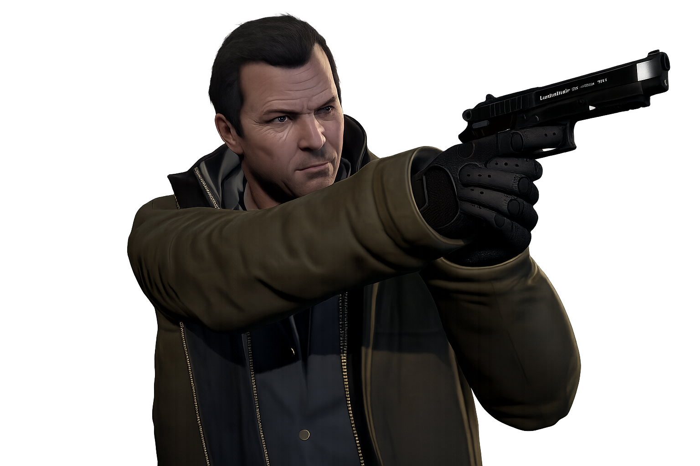

Michael De Santa
Michael De Santa es un exladrón de bancos que, tras años de actividad criminal, decide dejar atrás su antigua vida y acogerse a un programa de protección de testigos. Instalado en una lujosa mansión de Rockford Hills junto a su familia, lleva una existencia marcada por el aburrimiento, los conflictos personales y la frustración. Sin embargo, el deseo de recuperar la emoción de sus viejos días y una serie de acontecimientos inesperados lo empujarán de nuevo al mundo del crimen, donde su experiencia y liderazgo volverán a convertirse en piezas clave de la historia.